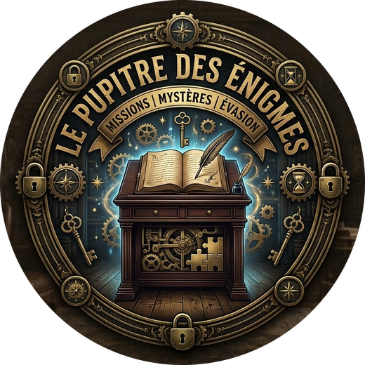

COMPARTIMENTLa fente : glissez-y un compartiment pour vous y rendre. Vous y restez.
MAIN GAUCHELa fente, encore : un objet.
MAIN DROITELe lecteur à plat : un objet.

Le Pupitre des Énigmes142 mètres de fond. Une heure d'air.
Et un sas qui refuse de s'ouvrir.
Ce soir, pas d'enquête : un escape game. Fouiller, recouper, combiner… et une main toujours libre pour la dynamo.
| I · Le naufrage | Le message de bord, votre mission | 3 |
| II · Les voix du bord | Ceux qui vous parlent | 5 |
| III · L'équipage | Tous matelots ; vos deux mains | 7 |
| IV · Le Narval | Les compartiments, le tableau de bord | 9 |
| V · Le pupitre du Narval | Comment jouer | 11 |
| VI · Le carnet de bord | À remplir au crayon | 13 |
La dynamo ne s'arrête jamais. Sans elle, l'écran s'éteint et plus rien ne se voit à bord. Quelqu'un doit toujours la tenir.
Mer de Brennor, 4 h 12 du matin. Vous vous réveillez dans le noir.
MESSAGE DE BORD · PRIORITÉ ABSOLUE
BÂTIMENT : sous-marin NARVAL · coque S-417
EXERCICE : « BRUME D'ACIER »
POSITION : mer de Brennor · fond à 142 m · 04 h 12
ÉTAT : collision à 04 h 07 · épurateurs détruits · air non recyclé · batteries à genoux
Il vous reste une heure d'oxygène. Seule la dynamo de secours, actionnée à la main, garde un peu de lumière.
L'ORQUE, sous-marin de sauvetage de la marine alliée de Norrvik, fait route vers vous. Il s'accrochera sur votre sas de sauvetage… que le choc a bloqué.
La commandante est coincée au poste avant. Elle vous parle par l'interphone.
FIN DE MESSAGE.
Débloquer la sortie avant de manquer d'air.
Pas de coupable, pas d'accusation, pas de rôle ni de document secret. Vous êtes tous matelots, à égalité. Ce qui vous sauvera : fouiller, recouper les documents, vous parler… et agir ensemble.
Vous ne les verrez pas. Mais vous les entendrez, au haut-parleur ou au casque.
Coincée au poste avant derrière une porte déformée, avec deux officiers. Elle ne peut vous parler que par l'interphone.
Assommé par le choc, il gît à l'infirmerie. Il sait beaucoup de choses sur ce bâtiment.
Il a capté votre balise et fait route vers vous. Son officier de quart ne s'accrochera qu'à un bâtiment qui répond.
| 4 h 07 | Le Narval heurte un haut-fond qui ne figurait sur aucune carte. |
| 4 h 08 | Les lumières s'éteignent. Le sas se met en sécurité. |
| 4 h 12 | Vous vous réveillez dans le noir, au poste d'équipage. |
Quand vous êtes bloqués, glissez la carte Interphone dans la fente : la commandante vous conseille. Les trois premiers conseils sont gratuits, les suivants coûtent 2 minutes d'air.
Quand le pupitre le demande, un seul d'entre vous met le casque. Ce qu'il entend, il le raconte aux autres. Certains sons ne passent qu'une fois : écoutez bien.
Un sous-marin vit : il glisse, il craque, il fuit. Les imprévus arrivent sans prévenir. Écoutez la consigne, et agissez vite.
Vos camarades ont laissé leurs affaires au poste d'équipage : casiers, photos, petits mots. Rien n'est là par hasard.
Pas de rôle, pas de pouvoir : tous matelots. Mais un bon équipage se répartit les postes, et en change souvent.
La lumière du bord.
Il appuie régulièrement sur le gros bouton et surveille l'anneau. Relevez-le souvent : c'est fatigant.
Les mains dans les enveloppes.
Ils ouvrent les enveloppes annoncées, trient les objets et les documents, et les montrent à tous.
La tête froide.
Ils recoupent ce qui est écrit, tiennent le carnet de bord et proposent les codes.
L'oreille du bord.
Il met le casque quand on le demande, et raconte tout, mot pour mot.
Le plateau du Narval renomme les commandes du pupitre. Un compartiment, et deux mains pour les objets :
Sous 40 % de lumière, l'écran s'assombrit ; à zéro, c'est le noir complet, et une carte glissée dans le noir ne donne rien. Actionnez la dynamo, puis glissez de nouveau la carte.
Coque S-417, Marine de la République de Valdarie. Dix compartiments, un seul sas.
Le profil du Narval. Les cartes Compartiment, face visible, forment le plan du bord.
Les dix voyants du plateau montrent l'état du sous-marin. Un appui sur la molette affiche le détail : vos objectifs, le temps, la lumière.
Elle reste dans le pupitre, au repos, depuis le début. Vous saurez quand la tourner.
Blanc chaud quand la dynamo tourne, il se vide quand elle faiblit, et vacille sous 30 %.
Il vous dira toujours quand vous servir de quoi. Voici ce que vous trouverez sur le plateau.
Commencez par fouiller le poste d'équipage, et lisez tout à voix haute. Un document qui semble anodin donne souvent la clé d'un autre.
À remplir au crayon pendant la partie.
| Compartiment | Ce qu'on y a trouvé | ✓ |
|---|---|---|
| Poste d'équipage | ||
| Coursive | ||
| Infirmerie | ||
| Local des batteries | ||
| Salle des machines | ||
| Poste de commande | ||
| Salle radio | ||
| Carré des officiers | ||
| Sas de sauvetage | ||
| Poste avant |
| A | B | C | D | E | F | G | H |
|---|---|---|---|---|---|---|---|
Radio __ · Console __ · Sas __ · Pompe de cale __ · Éclairage __
Mot frappé : __________
Réponse : __________
Pression : ______ bars
Missions · Mystères · Évasion
Le sous-marin Narval repose par 142 mètres de fond. L'air n'est plus recyclé, la lumière ne tient qu'à une dynamo, et le sas de sauvetage est bloqué. Vous avez une heure pour rejoindre l'Orque.
| La Disparition d'Éclipse | Le Haras des Trois Fers | ★ |
| Le Casse du Siècle | Monte-Carlo 1928 | ★★ |
| La dernière nuit de Lord Edgar | Le Manoir Blackwood | ★★ |
| Désamorçage | Brigade de déminage | ★★ |
| Signal Perdu | Station Kepler-9 | ★★★ |
| Dernier souffle | Sous-marin Narval | ★★★ |
| Banc d'essai | L'Atelier du professeur Lumen | ★ |